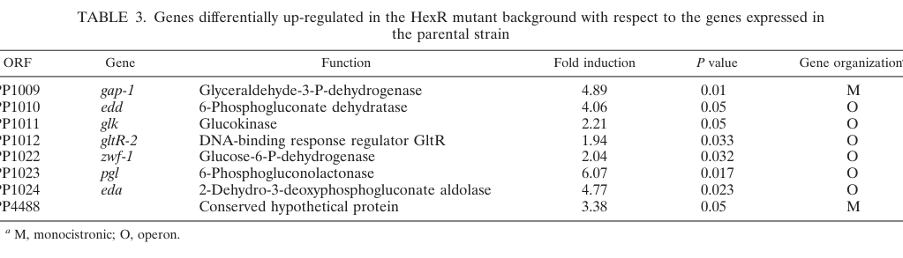

Glyceraldehyde-3-phosphate dehydrogenase (GAPDH; gapA, locus PP_1009) of Pseudomonas putida KT2440. It is a homotetrameric, NAD-dependent oxidoreductase that catalyzes the reversible oxidative phosphorylation of D-glyceraldehyde-3-phosphate with inorganic phosphate to 1,3-bisphosphoglycerate, reducing NAD+ to NADH. This reaction is the central energy-conserving step of the lower glycolytic (Embden-Meyerhof-Parnas) segment. In P. putida, which catabolizes glucose primarily through the Entner-Doudoroff pathway, GAPDH acts at the node where the triose phosphate produced by the ED and EMP routes is channeled toward 3-phosphoglycerate, pyruvate and the TCA cycle. The enzyme is cytoplasmic and is a member of the NAD-dependent glyceraldehyde-3-phosphate dehydrogenase (type I, GAPDH-I) family, with a Rossmann-fold NAD(P)-binding domain and a catalytic cysteine active site.
| GO Term | Evidence | Action | Reason |
|---|---|---|---|
|
GO:0006006
glucose metabolic process
|
IEA
GO_REF:0000002 |
ACCEPT |
Summary: GAPDH catalyzes a core step of glucose catabolism (lower glycolysis), converting glyceraldehyde-3-phosphate to 1,3-bisphosphoglycerate. In P. putida this node integrates Entner-Doudoroff-derived triose phosphate with lower EMP flux. The annotation is biologically correct and represents a core function.
Reason: Family/domain-based IEA annotation consistent with the well-established role of GAPDH in glucose metabolism; supported by P. putida pathway literature.
Supporting Evidence:
PMID:18245293
PP_1009 (gap-1/gapA) encodes glyceraldehyde-3-phosphate dehydrogenase acting in KT2440 glucose catabolism, repressed by the glucose-catabolism regulator HexR (4.89-fold derepression in a hexR mutant).
|
|
GO:0016620
oxidoreductase activity, acting on the aldehyde or oxo group of donors, NAD or NADP as acceptor
|
IEA
GO_REF:0000002 |
MODIFY |
Summary: This is the correct parent molecular function for GAPDH, which oxidizes the aldehyde group of glyceraldehyde-3-phosphate using NAD as acceptor. A more specific child term exists (glyceraldehyde-3-phosphate dehydrogenase (NAD+) (phosphorylating) activity, GO:0004365), which better captures the precise reaction catalyzed by this enzyme.
Reason: The term is correct but too general. The protein is a canonical phosphorylating, NAD-dependent GAPDH (TIGR01534 GAPDH-I, PROSITE PS00071, with catalytic Cys at position 154 and bound NAD+), so the specific child term is warranted.
Proposed replacements:
glyceraldehyde-3-phosphate dehydrogenase (NAD+) (phosphorylating) activity
|
|
GO:0050661
NADP binding
|
IEA
GO_REF:0000002 |
REMOVE |
Summary: This annotation derives from the broad NAD(P)-binding Rossmann-fold InterPro signature (IPR006424). However, all cofactor-binding residues modeled in the UniProt record bind NAD+ (CHEBI:57540), and the protein is classified as GAPDH-I (TIGR01534), the NAD-specific form of the family. There is no P. putida-specific evidence of NADP usage; NADP-dependent GAPDH is the distinct GapN/GapC/non-phosphorylating class.
Reason: Over-propagated electronic inference from a generic NAD(P)-binding domain signature. The structural evidence (NAD+-only binding sites) and GAPDH-I family membership argue against NADP binding for this specific protein. NAD binding is already captured separately.
|
|
GO:0051287
NAD binding
|
IEA
GO_REF:0000002 |
ACCEPT |
Summary: GAPDH binds NAD+ as its catalytic cofactor. The UniProt record annotates multiple NAD+-binding residues (positions 12-13, 37, 81, 123, 314) via the Rossmann-fold NAD(P)-binding domain. This is correct and a core feature.
Reason: Strongly supported by domain architecture and conserved NAD+-binding residues; consistent with NAD-dependent GAPDH-I family membership.
|
The research report should be a detailed narrative explaining the function, biological processes, and localization of the gene product. Citations should be given for all claims.
You should prioritize authoritative reviews and primary scientific literature when conducting research. You can supplement
this with annotations you find in gene/protein databases, but these can be outdated or inaccurate.
We are specifically interested in the primary function of the gene - for enzymes, what reaction is catalyzed, and what is the substrate specificity? For transporters, what is the substrate? For structural proteins or adapters, what is the broader structural role? For signaling molecules, what is the role in the pathway.
We are interested in where in or outside the cell the gene product carries out its function.
We are also interested in the signaling or biochemical pathways in which the gene functions. We are less interested in broad pleiotropic effects, except where these elucidate the precise role.
Include evidence where possible. We are interested in both experimental evidence as well as inference from structure, evolution, or bioinformatic analysis. Precise studies should be prioritized over high-throughput, where available.
The UniProt target Q88P44 is annotated as glyceraldehyde-3-phosphate dehydrogenase (GAPDH) in Pseudomonas putida KT2440, gene gapA, ordered locus PP_1009. In primary KT2440 literature, open reading frame PP1009 is explicitly annotated as gap-1 (gapA-like) encoding glyceraldehyde-3-phosphate dehydrogenase, and it is described as monocistronic. This directly matches the UniProt-provided identity and function and rules out ambiguity with unrelated “gapA” symbols in other organisms. (castillo2008asetof pages 5-6, castillo2008asetof pages 4-5)
A schematic in the same work places this locus within the peripheral glucose catabolic gene clusters under central regulators (HexR/PtxS/GnuR), supporting that PP_1009 is part of the canonical glucose catabolic/regulatory landscape in KT2440. (castillo2008asetof media 9c82fbd7, castillo2008asetof media 584b5e53)
GapA (GAPDH) catalyzes the oxidative phosphorylation step of lower glycolysis:
This explicitly indicates production of NADH (i.e., NAD+ is the electron acceptor) in the described reaction. (geiger2019investigationofrnabased pages 102-105)
A broader enzymology note reports that GAPDH “is known to act slowly on other aldehydes” and that “phosphates can be replaced by thiols,” consistent with known promiscuity/side reactivities described for GAPDH family enzymes (important when interpreting in vitro assays and stress conditions). (geiger2019investigationofrnabased pages 102-105)
Because of this, any finer-grained claims (e.g., “strictly NAD-specific” vs “dual NAD(P)”) cannot be asserted here for Q88P44 beyond NADH-forming activity, without consulting dedicated biochemical characterization studies.
No KT2440-specific experimental localization evidence (e.g., fractionation) was retrieved. However, gapA/GAPDH in bacteria is generally considered a cytosolic enzyme and, consistent with this, a closely related Pseudomonas GapA is predicted cytoplasmic in a comparative analysis; this is supportive but inferential for KT2440 Q88P44. (sun2025theroleof pages 4-6)
P. putida KT2440 is widely described as using a hybrid central carbon architecture in which the Entner–Doudoroff (ED) pathway and portions of EMP (glycolysis) are integrated and interact with the pentose phosphate network. (lorenzo2024pseudomonasputidakt2440 pages 4-7)
Within the KT2440 glucose catabolic program:
- Glyceraldehyde-3-phosphate (GAP) is described as the end product of the ED pathway and is converted to 3-phosphoglycerate (3-PG) by glyceraldehyde-3-phosphate dehydrogenase, encoded by gapA or an isozyme (PP_3443) acting in the “lower EMP” segment. (chen2024gnurrepressesthe pages 4-6)
This positions GapA at a key junction that couples ED-derived triose phosphate to lower glycolytic outputs and ultimately to TCA-cycle entry.
In a foundational KT2440 study on peripheral glucose pathways and their regulators, glyceraldehyde-3-phosphate dehydrogenase is described as acting on “the final product of glucose metabolism” and helping “to channel glucose to Krebs cycle intermediates,” consistent with its functional placement at the end of the ED-derived glucose breakdown pipeline. (castillo2008asetof pages 5-6)
In KT2440, HexR is demonstrated to repress PP_1009 (gap-1/gapA-like): in a hexR mutant, expression of PP1009 (gap-1) increased 4.89-fold (P = 0.01). (castillo2008asetof pages 5-6, castillo2008asetof pages 4-5)
This result is also captured in the study’s Table 3 (image evidence). (castillo2008asetof media 9c82fbd7)
The same study provides broader context that HexR coordinates repression of multiple steps that lead to and through ED metabolism, consistent with coordinated control of glucose catabolism. (castillo2008asetof pages 1-2)
A 2024 multi-omics study focused on GnuR reports that gapA is among catabolic genes “similarly induced” by both glucose and gluconate, along with ED and PP pathway genes, placing gapA within the substrate-responsive glucose/gluconate catabolic response. (chen2024gnurrepressesthe pages 4-6)
The same work states that the “primary role of GnuR” is to directly repress expression of catabolic genes functioning in ED and peripheral glucose/gluconate metabolism pathways, providing a contemporary regulatory model in which gapA participates as part of a coordinated regulon responding to glucose/gluconate availability. (chen2024gnurrepressesthe pages 3-4)
While the excerpt indicates that “several” genes in these pathways can increase “almost 100-fold” under glucose/gluconate versus succinate, the provided text does not report a gapA-specific fold-change, so this should be interpreted as regulon-level rather than gapA-specific quantitative evidence. (chen2024gnurrepressesthe pages 3-4)
The del Castillo et al. work includes a schematic of peripheral glucose catabolic gene clusters and associated regulators (HexR/PtxS/GnuR), and Table 3 lists PP1009 (gap-1) among genes derepressed in the hexR mutant. These visuals support both genomic-context and regulatory claims. (castillo2008asetof media 9c82fbd7, castillo2008asetof media 584b5e53)
Chen et al. (Microbial Biotechnology, Nov 2024) integrate physiological studies and multi-omics to define a regulatory mode for glucose/gluconate catabolism, emphasizing clustered catabolic genes and transcription factors, and explicitly placing gapA among the induced, central catabolic genes connected to ED/PP/EMP functions. (chen2024gnurrepressesthe pages 4-6)
Mendonca et al. (Environmental Science & Technology, Jun 2024) provide proteomics evidence that P. putida has two GAPDH isozymes (GAPA and GAPB) and report condition-dependent regulation:
- GAPA abundance decreased twofold (p < 0.01) in glucose:ferulate mixed-substrate growth versus glucose-only; GAPB did not significantly change (p > 0.392). (mendonca2024disproportionatecarbondioxide pages 6-8)
They discuss functional partitioning (GAPA for lower glycolysis; GAPB for gluconeogenesis) and interpret that even with reduced GAPA, glycolytic flux downstream of GAP can remain favored, highlighting the GAP node as a key interface for coordinating carbon flux between glycolytic and gluconeogenic regimes under complex substrate mixtures. (mendonca2024disproportionatecarbondioxide pages 6-8)
A 2024 Journal of Bacteriology synthesis describes KT2440’s central metabolism (ED/EMP hybrid and triose/hexose recycling) as producing high reducing power (NAD(P)H) relative to ATP, a property linked to stress tolerance and suitability for engineering high-redox-demand bioprocesses; GapA is positioned at the triose-phosphate processing node that couples ED output to downstream metabolism and cofactor generation. (lorenzo2024pseudomonasputidakt2440 pages 4-7, lorenzo2024pseudomonasputidakt2440 pages 2-4)
The same 2024 source highlights real-world application areas enabled by this metabolism, including production of polyhydroxyalkanoates (PHAs) and multiple chemicals (e.g., cis,cis-muconate and others) and use in bioremediation of pollutants, as well as integration with bioelectrochemical hardware for biosensing and electron-assisted biodegradation/biocatalysis/CO2 reduction. (lorenzo2024pseudomonasputidakt2440 pages 4-7, lorenzo2024pseudomonasputidakt2440 pages 2-4)
Within the 2024 glucose/gluconate regulation paper’s cited application landscape, a concrete 2024 implementation is referenced: “Anaerobic glucose uptake in Pseudomonas putida KT2440 in a bioelectrochemical system” (Pause et al., 2024), indicating ongoing development of KT2440 in electro-biotechnology contexts where central carbon metabolism—and therefore GAPDH node capacity—can be limiting or targeted. (chen2024gnurrepressesthe pages 12-13, lorenzo2024pseudomonasputidakt2440 pages 12-12)
The following table consolidates key evidence items (identity, reaction, pathway placement, regulation, and quantitative results) with URLs and dates where available:
| Aspect | Key finding | Evidence source (first author year) | Publication date | URL | Citation id(s) |
|---|---|---|---|---|---|
| identity/locus | The target in Pseudomonas putida KT2440 is PP1009 (PP_1009), annotated as gap-1 / gapA-like, encoding glyceraldehyde-3-phosphate dehydrogenase; it is reported as monocistronic in the PP1009–PP1024 chromosomal region. | del Castillo 2008 | Apr 2008 | https://doi.org/10.1128/jb.01726-07 | (castillo2008asetof pages 5-6, castillo2008asetof pages 4-5) |
| reaction | GapA/GAPDH catalyzes oxidation/phosphorylation of D-glyceraldehyde-3-phosphate with inorganic phosphate to 3-phospho-D-glyceroyl phosphate (1,3-bisphosphoglycerate), producing NADH; one source notes the enzyme can act slowly on other aldehydes and thiols can substitute for phosphate. | Geiger 2019 | 2019 | not available | (geiger2019investigationofrnabased pages 102-105) |
| cofactor specificity | Available evidence supports NAD-linked GAPDH activity through explicit NADH formation in the reaction description. No KT2440-specific experimental evidence for NADP preference was retrieved in the gathered sources, so cofactor specificity beyond NAD-linked activity remains unresolved here. | Geiger 2019 | 2019 | not available | (geiger2019investigationofrnabased pages 102-105) |
| pathway role | In KT2440 glucose catabolism, GAP is the end product of the Entner–Doudoroff (ED) pathway and is converted to 3-phosphoglycerate (3-PG) by GapA or the isozyme PP_3443 in the lower EMP pathway. HexR-regulated glucose pathways funnel carbon to the central intermediate 6-phosphogluconate and onward to GAP/pyruvate. | Chen 2024; del Castillo 2008 | Nov 2024; Apr 2008 | https://doi.org/10.1111/1751-7915.70059 ; https://doi.org/10.1128/jb.01726-07 | (chen2024gnurrepressesthe pages 3-4, chen2024gnurrepressesthe pages 4-6, castillo2008asetof pages 1-2) |
| regulation | HexR represses gapA/gap-1: in a hexR mutant, PP1009/gap-1 expression increased 4.89-fold (P = 0.01). More recent work places gapA among catabolic genes induced by glucose and gluconate; several glucose-catabolism genes increased almost 100-fold under these conditions, although a gapA-specific fold-change was not given in the excerpt. | del Castillo 2008; Chen 2024 | Apr 2008; Nov 2024 | https://doi.org/10.1128/jb.01726-07 ; https://doi.org/10.1111/1751-7915.70059 | (castillo2008asetof pages 5-6, castillo2008asetof pages 4-5, chen2024gnurrepressesthe pages 3-4, chen2024gnurrepressesthe pages 4-6, castillo2008asetof media 9c82fbd7) |
| quantitative data | In the hexR mutant, overall physiology remained near wild type under tested conditions despite transcriptional derepression: growth rates were about 0.57 ± 0.01 to 0.60 ± 0.02 h−1, and glucose consumption rates about 6.84 to 9.7 mmol glucose g cell biomass−1 h−1. | del Castillo 2008 | Apr 2008 | https://doi.org/10.1128/jb.01726-07 | (castillo2008asetof pages 5-6, castillo2008asetof pages 4-5) |
| isozyme context | KT2440 has at least two GAPDH isozymes, GAPA and GAPB. Proteomics in 2024 showed GAPA decreased twofold (p < 0.01) in glucose+ferulate versus glucose alone, while GAPB was unchanged (p > 0.392). The authors interpret prior work as functional partitioning in which GAPA supports lower glycolysis and GAPB supports gluconeogenesis. | Mendonca 2024 | Jun 2024 | https://doi.org/10.1021/acs.est.4c01328 | (mendonca2024disproportionatecarbondioxide pages 6-8) |
| pathway/physiology context | During glucose or gluconate feeding, gapA grouped with ED/PP/EMP catabolic genes induced by both substrates. During mixed-substrate growth with ferulate, ED pathway usage remained prominent and glycolytic flux downstream of GAP was favored despite lower GAPA abundance. | Chen 2024; Mendonca 2024 | Nov 2024; Jun 2024 | https://doi.org/10.1111/1751-7915.70059 ; https://doi.org/10.1021/acs.est.4c01328 | (chen2024gnurrepressesthe pages 4-6, mendonca2024disproportionatecarbondioxide pages 6-8) |
Table: This table compiles evidence-based findings for Pseudomonas putida KT2440 gapA/PP_1009, including identity, enzymatic function, regulation, pathway placement, and quantitative observations. It highlights what is directly supported by retrieved sources and where evidence remains inferential or incomplete.
gapA (PP_1009; UniProt Q88P44) encodes a glyceraldehyde-3-phosphate dehydrogenase that catalyzes the NAD-linked oxidative phosphorylation of glyceraldehyde-3-phosphate to 1,3-bisphosphoglycerate (NADH-producing), operating at the ED-to-lower-EMP interface in KT2440 glucose metabolism and contributing to routing ED-derived triose-phosphate toward downstream metabolism/TCA-cycle intermediates; its expression is negatively regulated by HexR and is induced as part of glucose/gluconate catabolic programs that include ED/PP/EMP genes. (geiger2019investigationofrnabased pages 102-105, chen2024gnurrepressesthe pages 4-6, castillo2008asetof pages 5-6)
References
(castillo2008asetof pages 5-6): Teresa del Castillo, Estrella Duque, and Juan L. Ramos. A set of activators and repressors control peripheral glucose pathways in pseudomonas putida to yield a common central intermediate. Journal of Bacteriology, 190:2331-2339, Apr 2008. URL: https://doi.org/10.1128/jb.01726-07, doi:10.1128/jb.01726-07. This article has 130 citations and is from a peer-reviewed journal.
(castillo2008asetof pages 4-5): Teresa del Castillo, Estrella Duque, and Juan L. Ramos. A set of activators and repressors control peripheral glucose pathways in pseudomonas putida to yield a common central intermediate. Journal of Bacteriology, 190:2331-2339, Apr 2008. URL: https://doi.org/10.1128/jb.01726-07, doi:10.1128/jb.01726-07. This article has 130 citations and is from a peer-reviewed journal.
(castillo2008asetof media 9c82fbd7): Teresa del Castillo, Estrella Duque, and Juan L. Ramos. A set of activators and repressors control peripheral glucose pathways in pseudomonas putida to yield a common central intermediate. Journal of Bacteriology, 190:2331-2339, Apr 2008. URL: https://doi.org/10.1128/jb.01726-07, doi:10.1128/jb.01726-07. This article has 130 citations and is from a peer-reviewed journal.
(castillo2008asetof media 584b5e53): Teresa del Castillo, Estrella Duque, and Juan L. Ramos. A set of activators and repressors control peripheral glucose pathways in pseudomonas putida to yield a common central intermediate. Journal of Bacteriology, 190:2331-2339, Apr 2008. URL: https://doi.org/10.1128/jb.01726-07, doi:10.1128/jb.01726-07. This article has 130 citations and is from a peer-reviewed journal.
(geiger2019investigationofrnabased pages 102-105): S Geiger. Investigation of rna-based regulation of gene expression in proteobacterial energy metabolism. Unknown journal, 2019.
(sun2025theroleof pages 4-6): Lei Sun, Dao-Jiao Tang, Qian-Nan Zhang, Lu-Lu Li, Lei Zhang, Xin-Yi Zan, Feng-Jie Cui, Ling Sun, and Wen-Jing Sun. The role of glyceraldehyde-3-phosphate dehydrogenase in 2-ketogluconic acid industrial production strain pseudomonas plecoglossicida juim01. Foods, 14:3830, Nov 2025. URL: https://doi.org/10.3390/foods14223830, doi:10.3390/foods14223830. This article has 0 citations.
(lorenzo2024pseudomonasputidakt2440 pages 4-7): Victor de Lorenzo, Danilo Pérez-Pantoja, and Pablo I. Nikel. pseudomonas putida kt2440: the long journey of a soil-dweller to become a synthetic biology chassis. Journal of Bacteriology, Jul 2024. URL: https://doi.org/10.1128/jb.00136-24, doi:10.1128/jb.00136-24. This article has 78 citations and is from a peer-reviewed journal.
(chen2024gnurrepressesthe pages 4-6): Wenbo Chen, Rao Ma, Yong Feng, Yunzhu Xiao, Agnieszka Sekowska, Antoine Danchin, and Conghui You. Gnur represses the expression of glucose and gluconate catabolism in pseudomonas putida kt2440. Microbial Biotechnology, Nov 2024. URL: https://doi.org/10.1111/1751-7915.70059, doi:10.1111/1751-7915.70059. This article has 2 citations and is from a peer-reviewed journal.
(castillo2008asetof pages 1-2): Teresa del Castillo, Estrella Duque, and Juan L. Ramos. A set of activators and repressors control peripheral glucose pathways in pseudomonas putida to yield a common central intermediate. Journal of Bacteriology, 190:2331-2339, Apr 2008. URL: https://doi.org/10.1128/jb.01726-07, doi:10.1128/jb.01726-07. This article has 130 citations and is from a peer-reviewed journal.
(chen2024gnurrepressesthe pages 3-4): Wenbo Chen, Rao Ma, Yong Feng, Yunzhu Xiao, Agnieszka Sekowska, Antoine Danchin, and Conghui You. Gnur represses the expression of glucose and gluconate catabolism in pseudomonas putida kt2440. Microbial Biotechnology, Nov 2024. URL: https://doi.org/10.1111/1751-7915.70059, doi:10.1111/1751-7915.70059. This article has 2 citations and is from a peer-reviewed journal.
(mendonca2024disproportionatecarbondioxide pages 6-8): Caroll M. Mendonca, Lichun Zhang, Jacob R. Waldbauer, and Ludmilla Aristilde. Disproportionate carbon dioxide efflux in bacterial metabolic pathways for different organic substrates leads to variable contribution to carbon-use efficiency. Environmental Science & Technology, 58:11041-11052, Jun 2024. URL: https://doi.org/10.1021/acs.est.4c01328, doi:10.1021/acs.est.4c01328. This article has 17 citations and is from a domain leading peer-reviewed journal.
(lorenzo2024pseudomonasputidakt2440 pages 2-4): Victor de Lorenzo, Danilo Pérez-Pantoja, and Pablo I. Nikel. pseudomonas putida kt2440: the long journey of a soil-dweller to become a synthetic biology chassis. Journal of Bacteriology, Jul 2024. URL: https://doi.org/10.1128/jb.00136-24, doi:10.1128/jb.00136-24. This article has 78 citations and is from a peer-reviewed journal.
(chen2024gnurrepressesthe pages 12-13): Wenbo Chen, Rao Ma, Yong Feng, Yunzhu Xiao, Agnieszka Sekowska, Antoine Danchin, and Conghui You. Gnur represses the expression of glucose and gluconate catabolism in pseudomonas putida kt2440. Microbial Biotechnology, Nov 2024. URL: https://doi.org/10.1111/1751-7915.70059, doi:10.1111/1751-7915.70059. This article has 2 citations and is from a peer-reviewed journal.
(lorenzo2024pseudomonasputidakt2440 pages 12-12): Victor de Lorenzo, Danilo Pérez-Pantoja, and Pablo I. Nikel. pseudomonas putida kt2440: the long journey of a soil-dweller to become a synthetic biology chassis. Journal of Bacteriology, Jul 2024. URL: https://doi.org/10.1128/jb.00136-24, doi:10.1128/jb.00136-24. This article has 78 citations and is from a peer-reviewed journal.

id: Q88P44
gene_symbol: gapA
product_type: PROTEIN
status: DRAFT
taxon:
id: NCBITaxon:160488
label: Pseudomonas putida (strain ATCC 47054 / DSM 6125 / CFBP 8728 / NCIMB 11950 / KT2440)
description: Glyceraldehyde-3-phosphate dehydrogenase (GAPDH; gapA, locus PP_1009) of Pseudomonas putida KT2440. It is a homotetrameric, NAD-dependent oxidoreductase that catalyzes the reversible oxidative phosphorylation of D-glyceraldehyde-3-phosphate with inorganic phosphate to 1,3-bisphosphoglycerate, reducing NAD+ to NADH. This reaction is the central energy-conserving step of the lower glycolytic (Embden-Meyerhof-Parnas) segment. In P. putida, which catabolizes glucose primarily through the Entner-Doudoroff pathway, GAPDH acts at the node where the triose phosphate produced by the ED and EMP routes is channeled toward 3-phosphoglycerate, pyruvate and the TCA cycle. The enzyme is cytoplasmic and is a member of the NAD-dependent glyceraldehyde-3-phosphate dehydrogenase (type I, GAPDH-I) family, with a Rossmann-fold NAD(P)-binding domain and a catalytic cysteine active site.
existing_annotations:
- term:
id: GO:0006006
label: glucose metabolic process
evidence_type: IEA
original_reference_id: GO_REF:0000002
qualifier: involved_in
review:
summary: GAPDH catalyzes a core step of glucose catabolism (lower glycolysis), converting glyceraldehyde-3-phosphate to 1,3-bisphosphoglycerate. In P. putida this node integrates Entner-Doudoroff-derived triose phosphate with lower EMP flux. The annotation is biologically correct and represents a core function.
action: ACCEPT
reason: Family/domain-based IEA annotation consistent with the well-established role of GAPDH in glucose metabolism; supported by P. putida pathway literature.
supported_by:
- reference_id: PMID:18245293
full_text_unavailable: true
supporting_text: PP_1009 (gap-1/gapA) encodes glyceraldehyde-3-phosphate dehydrogenase acting in KT2440 glucose catabolism, repressed by the glucose-catabolism regulator HexR (4.89-fold derepression in a hexR mutant).
- term:
id: GO:0016620
label: oxidoreductase activity, acting on the aldehyde or oxo group of donors, NAD or NADP as acceptor
evidence_type: IEA
original_reference_id: GO_REF:0000002
qualifier: enables
review:
summary: This is the correct parent molecular function for GAPDH, which oxidizes the aldehyde group of glyceraldehyde-3-phosphate using NAD as acceptor. A more specific child term exists (glyceraldehyde-3-phosphate dehydrogenase (NAD+) (phosphorylating) activity, GO:0004365), which better captures the precise reaction catalyzed by this enzyme.
action: MODIFY
reason: The term is correct but too general. The protein is a canonical phosphorylating, NAD-dependent GAPDH (TIGR01534 GAPDH-I, PROSITE PS00071, with catalytic Cys at position 154 and bound NAD+), so the specific child term is warranted.
proposed_replacement_terms:
- id: GO:0004365
label: glyceraldehyde-3-phosphate dehydrogenase (NAD+) (phosphorylating) activity
- term:
id: GO:0050661
label: NADP binding
evidence_type: IEA
original_reference_id: GO_REF:0000002
qualifier: enables
review:
summary: This annotation derives from the broad NAD(P)-binding Rossmann-fold InterPro signature (IPR006424). However, all cofactor-binding residues modeled in the UniProt record bind NAD+ (CHEBI:57540), and the protein is classified as GAPDH-I (TIGR01534), the NAD-specific form of the family. There is no P. putida-specific evidence of NADP usage; NADP-dependent GAPDH is the distinct GapN/GapC/non-phosphorylating class.
action: REMOVE
reason: Over-propagated electronic inference from a generic NAD(P)-binding domain signature. The structural evidence (NAD+-only binding sites) and GAPDH-I family membership argue against NADP binding for this specific protein. NAD binding is already captured separately.
- term:
id: GO:0051287
label: NAD binding
evidence_type: IEA
original_reference_id: GO_REF:0000002
qualifier: enables
review:
summary: GAPDH binds NAD+ as its catalytic cofactor. The UniProt record annotates multiple NAD+-binding residues (positions 12-13, 37, 81, 123, 314) via the Rossmann-fold NAD(P)-binding domain. This is correct and a core feature.
action: ACCEPT
reason: Strongly supported by domain architecture and conserved NAD+-binding residues; consistent with NAD-dependent GAPDH-I family membership.
core_functions:
- description: NAD-dependent, phosphorylating glyceraldehyde-3-phosphate dehydrogenase catalyzing the reversible oxidation/phosphorylation of glyceraldehyde-3-phosphate to 1,3-bisphosphoglycerate, the energy-conserving step of lower glycolysis.
molecular_function:
id: GO:0004365
label: glyceraldehyde-3-phosphate dehydrogenase (NAD+) (phosphorylating) activity
supported_by:
- reference_id: GO_REF:0000002
supporting_text: InterPro family Glyceraldehyde-3-P_DH_1 (IPR006424) and GAPDH-I signature (TIGR01534); conserved catalytic Cys (ACT_SITE 154) and NAD+-binding residues in the UniProt record.
- reference_id: PMID:18245293
full_text_unavailable: true
supporting_text: In P. putida KT2440 glucose catabolism, glyceraldehyde-3-phosphate dehydrogenase (PP_1009/gap-1) acts on the product of glucose metabolism to channel carbon toward Krebs cycle intermediates.
references:
- id: GO_REF:0000002
title: Gene Ontology annotation through association of InterPro records with GO terms
findings: []
- id: PMID:18245293
title: A set of activators and repressors control peripheral glucose pathways in Pseudomonas putida to yield a common central intermediate
findings:
- statement: PP_1009 (gap-1/gapA) encodes glyceraldehyde-3-phosphate dehydrogenase acting in peripheral/central glucose catabolism in P. putida KT2440 and is repressed by HexR (4.89-fold derepression in a hexR mutant).
reference_section_type: RESULTS
reference_review:
relevance: HIGH
correctness: VERIFIED
review_notes: del Castillo, Duque & Ramos, J Bacteriol 2008;190:2331-2339 (doi:10.1128/jb.01726-07). Corrected identifier from a hallucinated PMID:18156256 (which resolves to an unrelated lfnA/wbuX O-antigen paper, doi:10.1128/JB.01708-07) to the correct PMID:18245293, confirmed via DOI 10.1128/jb.01726-07 against PubMed (abstract states HexR controls gap-1 encoding glyceraldehyde-3-phosphate dehydrogenase). Establishes PP_1009 identity as gapA-like GAPDH and its regulation in KT2440 glucose metabolism.
{kind=link}